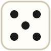

Juego de preguntas · 1 jugador
Trivia de arte
Reconocé obras y artistas contra reloj, con imágenes y datos de Wikipedia.
Tu partida

Buscando obras y artistas en Wikipedia…
No se pudieron cargar las preguntas.
Partida
Pregunta1 / 10
Puntos0
Vidas♥︎♥︎♥︎
Tiempo15
Pregunta
Resultado
Puntaje0
Correctas0
Incorrectas0